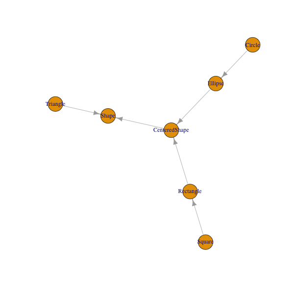
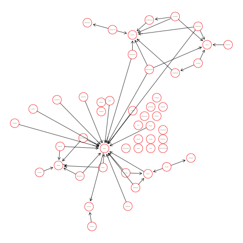
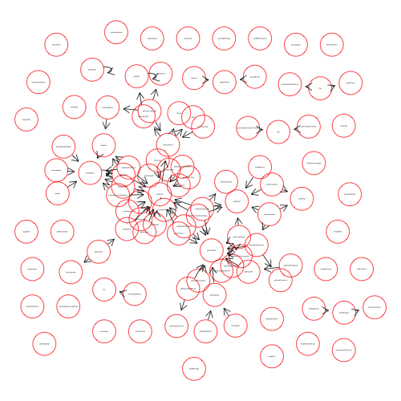

class: center, middle # Meta-programming for Exploring & Understanding Code ### Duncan Temple Lang <div style="clear: both"/> <!-- <hr width="50%"/> --> <img src="http://dsi.ucdavis.edu/images/dsi_banner.png" height="40%"></img> --- layout: true <img style="float: right" src="http://dsi.ucdavis.edu/images/dsi_brand_logo.png" width=100 height="60"></img> --- # Goals + What are the sorts of things you want to know when confronted with a code base + Some available tools + Infrastructure for building new tools --- # Context + Start collaborating on an existing project + Reviewing other people's code (for a paper) + Take over existing code base + Just trying to understand a package + Trying to determine which package to extend/build upon + Finding good/bad practices --- # Approaches + Read the documentation + Read any overview of the software design. + Talk with the original authors, if possible. + But before, familiarize yourself with the code + Read the code - last! (except for good/bad practices) --- # Starting Points + Two common setups + One or more scripts, e.g., R file or files + data + Collection of functions + R package + collection of files + Different goals and questions + Scripts + understand what the input files + the outputs - plots, files, ... + what packages are used + is all the code relevant, actually used + are some expressions repeated with only a single change, so could be turned into a iteration to avoid repetition + are there logically separate blocks doing different tasks + can parts be run in parallel + when is a variable no longer used (so we can remove it and free memory) + ... + Package/Functions + which functions are intended for direct use and which are support functions + what functions call what other functions + what are the classes that are defined/used + what methods are defined + do functions use non-local (global) variables + do they update non-local variables + is non-standard evaluation (NSE) used + how can we refactor the code + make smaller functions + do releated parameters have the same name + if I add a new required argument to foo(), what are the places I have to change the calls to foo(). + how are errors handled + ... --- # Simple Queries Direct from R ## For Functions, Packages, Classes, Methods + source() + Read functions into a separate environment + `CodeAnalysis::loadCode()` + ls() + getClasses() ``` getClasses("package:CodeDepends") ``` + `getClass("Script")` + `showMethods()` & `methods()` ``` showMethods(, "package:CodeDepends") ``` --- # Additional Query Functions + selectMethod() + way to determine which method will be called for a given set of input classes + formals(fun) + parameters and default expressions for a function + body(fun) + the code for the body of a function, separate from the parameters --- # Class Hierarchy + Object-oriented programming + How do we know the classes and their relationships to each other + S4 classes are more structured + Provide information after being defined by running code defining the classes, i.e. source() or install.packages() + Matrix package uses S4. Find all classes it defines ``` library(Matrix) mk = getClasses("package:Matrix") ``` + Look at the dMatrix class' definition ``` z = getClass("dMatrix") ``` + The class representing a class definition is classRepresentation ``` class(z) getClass("classRepresentation") ``` + Is this a VIRTUAL class? ``` z@virtual ``` + What classes does this class inherit from? ``` names(z@contains) ``` --- # Class Hierarchy Tree + How are the classes related to each other + Display as a graph + Define several classes related to shapes - circles, squares, rectangles, .... ``` source("classEg.R") ``` + Create a graph visualizing the class hierarchy ``` o = mkClassGraph(, "Shape") library(igraph) gg = graph_from_data_frame(o, directed = TRUE) plot(gg) ``` ---  --- # Call Graph + Analogous to a class graph, we have a function call graph + What other functions does a given function call + Nodes are functions + Edge between A and B - A calls B + directed ``` library(CodeDepends) g = makeCallGraph("package:CodeDepends") plot(g) plot(g, "neato") plot(g, "circo") ``` ---  --- # Unexported Functions - getNamespace() + For a package, ls() only lists the exported functions + getNamespace() gives us the entire set of variables/symbols in the package + includes the unexported symbols ``` e = getNamespace("CodeDepends") ll = as.list(e) ll = ll[ sapply(ll, is.function) ] ``` + Now have the internal functions as well as the exported ones ``` g = makeCallGraph(ll, packages = "CodeDepends(all)") plot(g, "neato") ``` ---  --- # Static Analysis + Static versus Run-time analysis + Understand w/o having to run the code or need the inputs + Need run-time to find out + which parts of code are actually run (branches) + how many times a function is called + size of data objects + how much time a function takes (profiling) + Static analysis on 1. evaluated/installed code 1. source code files + Difference + In 1, functions, classes and methods are already defined and regular objects + In 2, use the parse tree/abstract syntax tree (AST) + Both appropriate for different operations --- # Meta-programming ## R Code as Data + Can use + a text editor and search for strings + regular expressions + More structuredd approach + Parse the code into an AST - Abstract Syntax Tree + structured elements such as function **expression**, **call**, **if**, **for**, **<-**, **=** + the bold-faced text implies class names in R for language objects + Traverse the tree, collecting information of interest. + rstatic package provides alternative analogous representation and functionality --- ## Unused Parameters/Formal Arguments + Identify parameters that are not used in a function + Would remove them to simplify the function + or check that there were no typos and we are referring to them by a different name + findUnusedArgs in CodeAnalysis package + Example of function with an unused parameter (u) ``` f = function(a, b, u) { z = a + b ans = g(z) } ``` + Code to identify this unused parameter ``` CodeAnalysis::findUnusedArgs(f, FALSE) ``` + Can also correct the code and return the modified function with the parameter(s) removed. --- ## Typos + We have a parameter named `xyz` but refer to it as `xyx` + Result + unused parameter + global variable + Can check global is close to name of unused parameter. + Example function ``` f = function(abc, xyz) abc + xyx ``` + Match the typo for the global variable to the "close" parameter name: ``` m = CodeAnalysis::findUnusedArgs(f, FALSE) g = CodeAnalysis::getGlobals(f)$variables agrep(g, names(formals(f)), value = TRUE) ``` + Can check globals are close to parameter, + or also correspond to an unused parameter. --- # Find S3 Classes ### Assignments via `class(x) = names` + Unlike S4, S3 classes are semi/un-structured + assign the class attribute via ``` class(x) = characerVector ``` + Detect class assignment ``` f = function(file) { d = read.csv(file) class(d) = c("SpatialTimeSeries", class(d)) d } ``` ``` S3Assignments(f) ``` --- # Identify Input Files ### Read by functions we know read from connections + Want to find literal strings identifying the names of files we read (data) from + Look for calls to read.table(), read.csv(), readLines(), etc... + Example in [readFiles.R](readFiles.R) + Parse the code - not source() which would run it. ``` e = parse("readFiles.R") ``` + Call getFilesRead() on the collection of expressions ``` CodeAnalysis::getFilesRead(e) ``` --- # Non-standard evaluation + Find where code uses forms of non-standard evaluation - NSE + NSE includes calls to eval(), evalq(), get(), assign(), rm() + other forms all over tidyverse, magrittr - but don't handle those as not built into language. + Analyze the write.csv function for NSE ``` library(CodeAnalysis) findNSE(write.csv) ``` + Returns the nodes in the AST - abstract syntax tree - corresponding to these expressions that are the NSE. + Uses Nick Ulle's rstatic package + Represents the language objects differently than built into R + But conceptually same, just more structured and reference based + Can walk up the tree via parents which we can't do with R language objects. + More on R static later --- # CodeDepends <!-- What expressions in the script might not be needed--> + CodeDepends package + Reads expressions in a script, or body of a function + Extracts information from each about + input variables + output variables + packages used + literal strings (potentially file names) + Can determine which variables + which are not used again + when can be removed + logical blocks of related expressions + Summarize the flow of code + via visualization --- # CodeDepends + Read script and get information for each top-level expression ``` sc = readScript("changepoint.R") info = getInputs(sc) ``` + Find the packages that are/may be used ``` unlist(sapply(info, slot, "libraries")) ``` + Computational Flow ``` g = makeVariableGraph(frags = sc, info = info) plot(g) ``` + Plot the timeline of variables ``` dtm = getDetailedTimelines(sc, info) ``` --- # Language objects in R + We've done all of this without discussing how we compute the information + We work with R language objects + expression, call, if, + Get language objects via + parse(), quote(), substitute() + body() for body of a function + formals() for formal arguments or parameters + Each of these is a essentially a list + elements of the list correspond to do the different parts of the language object + e.g. in a call, first element is the function being called, second is the first argument, third is the second argument,... + In an if object, first element is symbol if, second is the condition being tested, third is body for the TRUE part, optional 4th element is for the body of the `else` + Nick's rstatic package + makes these elements clearer and more structure + adds the ability to find the parent language element so walk up the tree, not just down. + functionality to iterate over the AST elements + and many more higher-level tasks --- # C/C++ Code + Can do the same sorts of analyses on + 2 Approaches 1. Parse Tree - AST on source code 2. Partially optimized code via LLVM + 1. we are working on the raw source code + 2. some simplifications of the code have already been made + Some tasks easier in 1. or 2. --- # AST Approach + In R, use RCIndex package + Reasonably comprehensive document describing the package + `tu = parseTU("filename.cc")` + `k = getClasses(tu)` + `r = getRoutines(tu)` + `e = getEnums(tu)` + `d = getDataStructures(tu)` --- # Bodies of Routines --- # LLVM